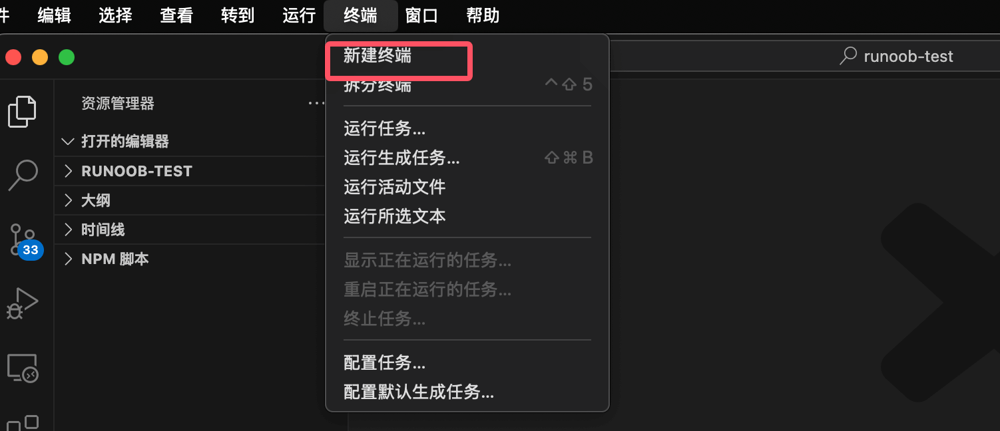
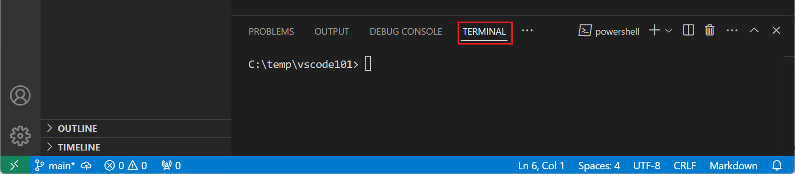
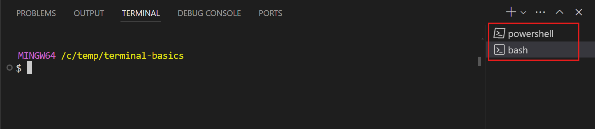

Cursor Integrated Terminal
Cursor is built on Visual Studio Code, retaining VS Code's powerful features and familiar operation experience, while adding AI-assisted programming features.
Cursor has a built-in integrated terminal, which works the same as the VS Code integrated terminal; we can select it from the menu bar."Terminal"options, then select"New Terminal"：

You can also select a file in the directory, right-click, and choose from the dropdown menu."Open in Integrated Terminal"：

Terminal shortcuts:
| Features | Windows/Linux | macOS |
|---|---|---|
| Show integrated terminal | Ctrl + ` | Ctrl + ` |
| New Terminal | Ctrl+Shift+`` |
Cmd+Shift+`` |
| Switch Terminal | Ctrl+PageUp/PageDown |
Cmd+PageUp/PageDown |
| Close Terminal | Ctrl+Shift+W |
Cmd+Shift+W |
Depending on the operating system, we can choose different terminal environments, such as PowerShell, Command Prompt, or Bash.

Enter the following command in the terminal to create a new file greetings.txt:
echo "Hello, VS Code" > greetings.txt
The default folder for the workspace is the root directory of the current project.
After creating the file, the "Explorer" will automatically display the new file.

We can open multiple terminals at the same time. Click the "Launch Profile" drop-down menu in the upper right corner of the terminal to see available terminal environments and select one.

Use the terminal to run commands
The terminal opens a default shell, such as Bash, PowerShell, or Zsh, and the terminal's working directory starts from the root of the workspace folder.

Enter basic commands like ls or dir to list files in the current directory.
The terminal will directly display the command's output.

Interact with command output
The terminal in VS Code also provides the ability to interact with command output. Commands often output file paths or URLs, and you may want to directly open or jump to these links.
For example, a compiler or code checking tool may return an error message containing a file path and line number. You don't need to manually search for the file; just select the link in the terminal output to open the file directly in the editor.
Let's see how to interact with the command output in the terminal:
- Open the terminal where you previously ran
lsordircommands. - In the terminal, press and hold
Ctrl/Cmdkey, hover the mouse over the file name, and then select the link.

Note that when you hover the mouse over the text in the output, it becomes a link.
When you select the file name, VS Code will open the selected file in the editor.
All text in the terminal output is clickable. If you select a hyperlink in the terminal, it will open the link in the default browser.
Create a Command.txt file containing available Shell commands.
In PowerShell:
Get-Command | Out-File -FilePath .\Command.txt
In Bash / Zsh:
ls -l /usr/bin > Command.txt
Enter the following command to search for commands in the Command.txt file:
In PowerShell:
Get-ChildItem *.txt | Select-String "dir"
In Bash / Zsh:
grep -n "dir" *.txt
Note that the command output will include file names and line numbers where search results are found, and the terminal will recognize these texts as links.
Select one of the links to open the file in the editor and jump to a specific line in the file.

Browse command history
When using the terminal, we may need to view previous commands and their outputs, or we may want to re-run a command.
We can use shortcut keys to quickly browse historical commands: pressCtrl + ↑or⌘ + ↑shortcut key to scroll up to the previous command in terminal history.

If you press multiple timesCtrl + ↑, the terminal will continue to scroll up through history. You can also useCtrl + ↓Shortcut keys to browse down through history.
Finally, we will see a circular icon appear next to a run command. Select that circular icon, then choose "Rerun Command" to re-execute the command.

Run commands in different shells
The terminal supports opening multiple terminals at the same time.
For example, we can use one terminal for running Git commands and another for running build scripts.
Add a new terminal in a different Shell: select the ˅ icon in the terminal panel to open the terminal drop-down menu, then select one from the available shells.

Note:The available shells depend on the shells installed on your computer.
The new terminal will open with the shell you selected, and you can enter commands as before.

Tip:You can also select the + icon to create a new terminal for the default shell, using the shortcut keys⌃⇧(Ctrl + Shift + `), or select from the menu bar.Terminal > New Terminalto create a new terminal.
We can also drag the terminal from the terminal list to the editor area.
For example, we drag the terminal tab out of the VS Code window to make it a floating window.

Move the terminal to the editor area:When you hover over the terminal list, select the trash can icon to close an already open terminal.

Click me to share notes.
The note must be an extension of this article's content!
For article submission, click here
How to obtain the registration invitation code
Before sharing notes, you mustLog in！
How to obtain the registration invitation code